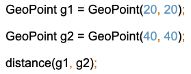
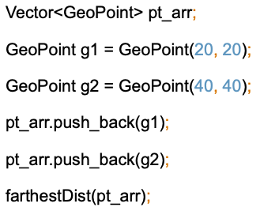
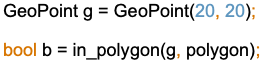
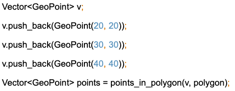
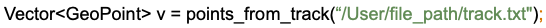
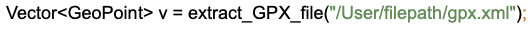

GIS API is an API that provides basic GIS (Geographic Information Systems) operations.
The package implements functionality for managing and working with geographic information. The basic data we'll be manipulating is geographic points: 2D latitude and longitude values, as well as 3D latitude, longitude, elevation values.
The GeoPoint class contains the latitude and longitude of a geographic point in floating point value in a single object. Object can be manipulated as 3D point when elevation is specified in positive float value by user, and otherwise it is 2D point.
The value of latitude is between -90 and 90 (inclusive), and longitude is -180 and 180 (inclusive). The default value of elevation is -1 which means that the object is 2D point, and the value of elevation can be non-negative float when manipulating the object as 3D point. The constructors which creates geographic points do not check the user from setting these fields as the value outside of the correct range. If the fields’ value is not in the proper range, some function calls might not be proceeded.
| latitude |
|---|
private float latitude
The latitude of the geographic point. Value is between -90 and 90 inclusive.
See Also:
getLatitude(), setLatitude(float) |
| longitude |
|---|
private float longitude
The longitude of the geographic point. Value is between -180 and 180 inclusive.
See Also:
getLongitude(), setLongitude(float) |
| elevation |
|---|
private float elevation
The elevation of the 3D geographic point. Default value is set as -1, and if user sets the value, the value should be non-negative.
See Also:
getElevation(), setElevation(float) |
| GeoPoint |
|---|
public GeoPoint()
Creates an instance of 2D GeoPoint with latitude of 0 and longitude of 0.
|
| GeoPoint |
|---|
public GeoPoint(float latitude, float longitude)
Creates an instance of 2D GeoPoint with specified latitude and specified longitude.
Parameters:
latitude - the specified latitude
longitude - the specified longitude
|
| GeoPoint |
|---|
public GeoPoint(float latitude, float longitude, float elevation)
Creates an instance of 3D GeoPoint with specified latitude, specified longitude and specified elevation.
Parameters:
latitude - the specified latitude
longitude - the specified longitude
elevation - the specified elevation |
| getLatitude |
|---|
public float getLatitude()
Returns the latitude of the GeoPoint object in floating point.
Returns:
the latitude of the GeoPoint object.
|
| getLongitude |
|---|
public float getLongitude()
Returns the longitude of the GeoPoint object in floating point.
Returns:
the longitude of the GeoPoint object.
|
| getElevation |
|---|
public float getElevation()
Returns the elevation of the GeoPoint object in floating point.
Returns:
the elevation of the GeoPoint object.
|
| setLatitude |
|---|
public void setLatitude(float latitude)
Sets the specific latitude of the GeoPoint object.
Parameters:
latitude - the new latitude for GeoPoint object
|
| setLongitude |
|---|
public void setLongitude(float longitude)
Sets the specific longitude of the GeoPoint object.
Parameters:
longitude - the new longitude for GeoPoint object
|
| setElevation |
|---|
public void setElevation(float elevation)
Sets the specific elevation of the 3D GeoPoint object.
Parameters:
elevation - the new elevation for 3D GeoPoint object
|
| distance |
|---|
public float distance(GeoPoint g1, GeoPoint g2)
Returns the distance of two geographic points in floating point.
Parameters:
g1 - the first GeoPoint object
g2 - the second GeoPoint object
Returns:
the distance of g1 and g2.
Exception:
If the latitude is out of [-90,90] or longitude is out of [-180,180] for any of g1 or g2, it throws exception.
Example:

|
| farthestDist |
|---|
public void farthestDist(Vector<GeoPoint> v)
Calculates and prints out the distance of the farthest two geographic points.
Parameters:
v - the vector of GeoPoint objects
Exception:
If the vector contains less than 2 objects, throws exception.
Example:

See Also:
|
| in_polygon |
|---|
public bool in_polygon(GeoPoint g, Vector<GeoPoint> polygon)
Returns true if g is in the polygon, and false otherwise.
Parameters:
g - the GeoPoint objects which you want to determine whether or not it is in the polygon
polygon - the vector of GeoPoint objects that defines a region
Returns:
the boolean value indicating if g is in the polygon.
Example:

See Also:
Vector, points_in_polygon
|
| points_in_polygon |
|---|
public Vector<GeoPoint> points_in_polygon(Vector<GeoPoint> v, Vector<GeoPoint> polygon)
Returns vector of GeoPoint objects that are inside the polygon.
Parameters:
v - the vector of GeoPoint objects which you want to determine whether or not they are in polygon
polygon - the vector of GeoPoint objects that defines a region
Returns:
the vector of GeoPoint objects that are in the region.
Example:

See Also:
Vector, in_polygon
|
| points_from_track |
|---|
public Vector<GeoPoint> points_from_track(File track)
Returns vector of GeoPoint objects visited by someone.
Parameters:
track - a file that contains the information about journey taken by someone
Returns:
the vector of GeoPoint objects that are visited by someone.
Example:

See Also:
|
| extract_GPX_file |
|---|
public Vector<GeoPoint> extract_GPX_file(File gpx)
Reads GPX file and extract the route and return the points on the route.
Parameters:
gpx - a XML file that contains the geographic data
Returns:
the vector of GeoPoint objects that are extracted from GPX file.
Example:

See Also:
|